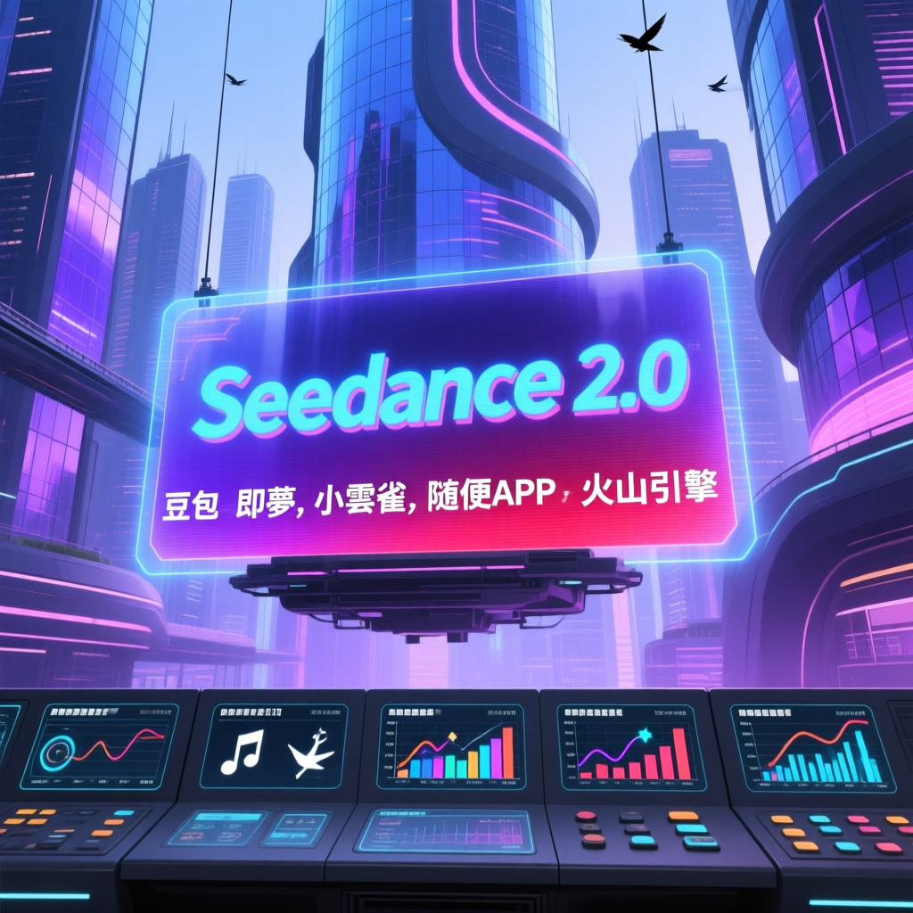

近日，Seedance 2.0 在網路上迅速走紅，成為眾多內容創作者和廣告商的熱門工具。本次報告揭示了五個免費使用 Seedance 2.0 的入口，並詳細拆解了11種當下最火的爆款玩法，涵蓋動漫、短劇、商業廣告大片等多個領域。

本次報告揭示了五個免費使用 Seedance 2.0 的入口，並詳細介紹了其特性和應用場景。這些入口提供了豐富的功能，滿足了不同使用者的需求，從快速生成影片到精準控制角色和場景，應有盡有。
報告公開了五個免費使用 Seedance 2.0 的入口，包括豆包、即夢、小雲雀、隨便APP和火山引擎。每個入口都有其獨特的功能和優勢。
數據顯示，這些入口在生成速度和畫質方面表現出色。例如，豆包和火山引擎提供了快速生成影片的能力，且畫質清晰，運鏡絲滑。此外，報告還分享了如何輕鬆去除生成影片中的浮水印，進一步提升作品的專業度。
隨著AI技術的不斷進步，Seedance 2.0 等工具將在內容創作和商業變現方面發揮越來越重要的作用。未來，這些工具可能會進一步最佳化生成速度和畫質，提供更多高階功能，以滿足使用者日益增長的需求。同時，業界應關注資料安全和版權保護問題，確保AI技術的健康發展。
報告指出，Seedance 2.0 的五大免費入口為內容創作者和廣告商提供了強大的工具支持，能夠零成本複製千萬播放的影片，實現高效的內容創作和商業變現。建議內容創作者和廣告商積極探索和利用這些免費入口，把握AI時代的紅利，實現事業的快速成長。